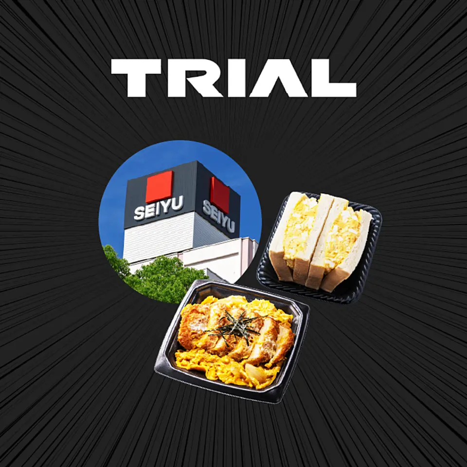
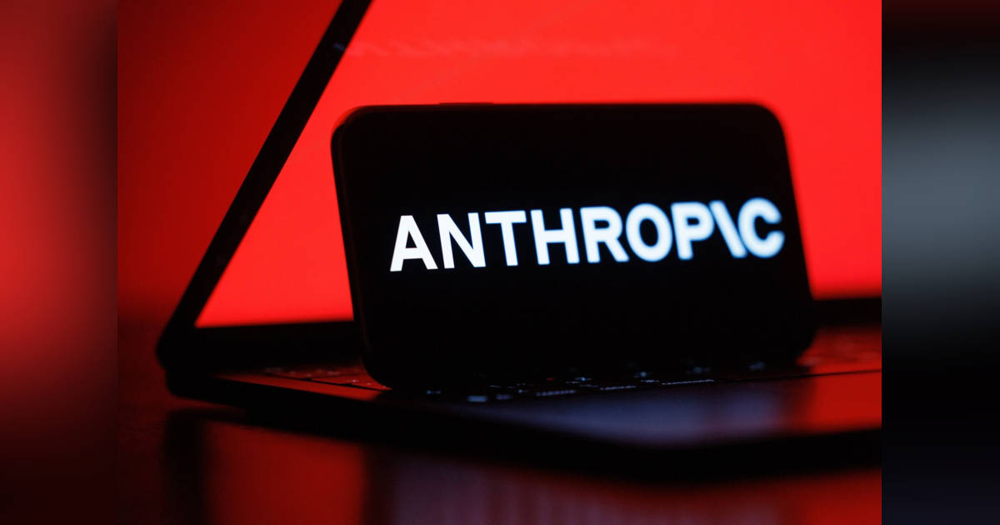
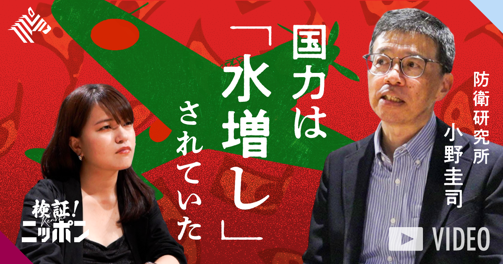
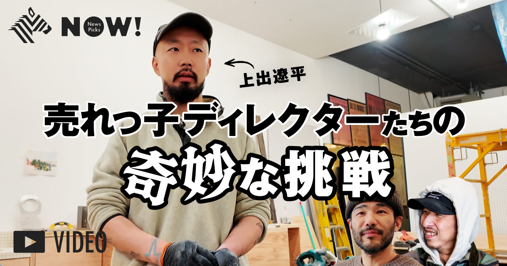

記事別メモ
1. 【転換】西友がトライアル流で変わった
発行日時: 2026/08/15 05:30 JST
あなたに関係ありそうな理由: 買収後の成長は看板の掛け替えではなく、既存店の運営・データ・投資判断をどこまで日常業務へ入れ直せるかで決まるから。
トライアルホールディングスが西友を子会社化した後、都市型スーパーマーケットをどう伸ばそうとしているのかを追うNewsPicksオリジナルである。トライアルは2025年3月に西友の買収を発表し、同年7月に子会社化した。約240店を抱える西友は、トライアルにとって都市部の店舗網を一気に得る案件だった。一方で、食品スーパーは値頃感、品ぞろえ、欠品、レジ待ち、販促の反応が毎日の来店に直結する。規模を手に入れただけで収益が改善するわけではなく、買収後に店の運営をどう変えるかが焦点になる。記事は、トライアルの2026年6月期の売上高が前期比68％増の1兆3471億円、営業利益が同43.9％増の303億円となったことを起点に、西友の連結効果と既存店改革の両方を読み解く。決算発表後に株価が上昇した背景には、買収が数字として見え始めた期待がある。トライアルの強みとして記事が置くのは、小売とITを別部署の話にしない運営である。スマートカートやAIカメラなどを使い、店内で起きる購買や在庫の変化を捉え、価格・品ぞろえ・オペレーションへ戻す考え方だ。西友ではトライアル流への転換を進めつつ、都市部の暮らしに合う売場や運営をつくる必要がある。地方の大型店で機能した施策をそのまま移植するのではなく、立地、客層、来店頻度、配送や人員の制約に合わせて検証する段階だと読める。表示コメントでは、すでに転換した3店舗で売上が4割増えたことに注目する声があった。同時に、それを全店へ広げた際にも維持できるか、買収に伴う負債や投資をどう回収するかを見るべきだという指摘も出ている。重要なのは、デジタル施策を置くこと自体ではない。現場が扱えるデータになっているか、売場の判断が速くなるか、顧客にとって価格・品ぞろえ・会計の体験が良くなるかを、店舗ごとに測り続けることだ。買収後の統合では、本社の新しい方針と現場の慣行がぶつかりやすい。西友のケースは、都市部の既存資産を生かしながら、トライアルが積み上げた小売テクノロジーを利益へつなげられるかの実験でもある。今後は売上の伸びだけでなく、改装店の粗利、客数、欠品、レジや配送の生産性がどう動くかを見たい。数字と店頭体験の両方がそろって初めて、再編の成果は持続的なものになる。

仕事や会話で使える一言: 買収の成否は、統合後に現場の判断が毎日どれだけ良くなったかで見えてきます。
NewsPicks原文を読む
2. アンソロピックの売上高、2Qは1.8兆円超－少なくとも14倍に
発行日時: 2026/08/15 08:11 JST
あなたに関係ありそうな理由: 生成AIの価値が実験段階を越えるほど、モデルの性能だけでなく、企業利用を継続できる価格・速度・資金調達が重要になるから。
Bloombergが報じた、Anthropicの急成長を示す記事である。記事によると、同社の2026年4〜6月期の暫定売上高は115億ドル超、円換算で約1兆8300億円となり、前年同期の少なくとも14倍に達した。前四半期は47億3000万ドルで、短期間でさらに規模を広げた計算になる。調整後営業利益も黒字化したとされる。5月時点の年換算売上高は470億ドル超で、OpenAIの年換算売上高と比べる際には算定方法の違いに注意が必要だが、主要なAI企業が企業向け需要を中心に急拡大していることは明確だ。記事は、コード生成や業務効率化での利用が広がり、企業が「試す」段階から、実際の開発やオペレーションに組み込む段階へ進んでいることを背景に置く。売上の大きさだけでは、AI事業の強さは測れない。利用が増えるほど、推論に必要な計算資源、電力、半導体、クラウド費用も増えるためだ。Anthropicは大規模な資金調達や将来の株式上場を視野に入れ、複数の金融機関と準備を進めていると報じられた。成長資金は宣伝費というより、モデルの開発、学習、推論基盤を確保するためのものになる。OpenAIとの競争に加え、中国勢を含む多様なモデルが追い上げる中で、顧客に価値を感じてもらえる出力を、十分な速度と価格で安定提供できるかが問われる。売上が大きくても、顧客獲得コストや計算原価が見合わなければ、長い目で見た優位には直結しない。表示コメントでは、企業のAI投資が実需に支えられているという見方と、価格や投資対効果の検証はこれから厳しくなるという見方が並んだ。コード作成や自動化の用途は成果を測りやすく、契約が継続しやすい一方、どの業務でどの程度の人手や時間を減らせたのかを示せなければ、導入は広がりにくい。上場準備も、話題性だけでなく計算資源を長期に調達する基盤として読む必要がある。利用する側にとっては、売上報道を追うだけでは足りない。同じ業務で品質、応答時間、利用単価、承認や手戻りの量を測り、複数のモデルや契約条件を比較できるようにしておくことが大切だ。提供企業の成長競争が激しいほど、利用企業には自社データと業務の整備、そして成果を測る物差しが求められる。

仕事や会話で使える一言: AIの売上成長は、導入した企業が成果を測れる業務をどれだけ増やしたかの裏返しでもあります。
NewsPicks原文を読む
3. 【戦後81年】勝てない戦争を支えた「金融」のカラクリ
発行日時: 2026/08/15 07:00 JST
あなたに関係ありそうな理由: 経済や組織の持久力は、目に見える装備や予算額だけでなく、資金をどう集め、将来の負担をどう先送りしているかで変わるから。
終戦から81年の節目に、資源面で不利だった日本がなぜ長期の戦争を続けられたのかを、軍事ではなく金融と会計からたどるNewsPicksの動画である。戦争は兵器や兵員だけで維持されるものではない。食料、燃料、輸送、軍需品を調達し、前線と国内の支出を支払う資金の流れが止まれば、戦える力そのものが失われる。番組では軍事経済の研究者への取材を通じ、戦時に国債がどのように使われ、中央銀行の資金供給や通貨発行が国家の支出をどう支えたかを説明する。政府は税収だけで巨額の支出を賄えないため、国債を発行し、将来の国民負担へ回す。その資金調達が可能である限り、物量で劣る側も戦争を直ちには止めずに済むという構図だ。ただし、資金を作れることと、実質的な資源を増やせることは別である。貨幣や債券を増やしても、輸入に必要な外貨、原材料、船舶、労働力が不足すれば、物価上昇や供給不足が起きる。記事は、戦時の財政運営が短期的には継戦能力を支える一方、インフレや戦後の負担を社会へ残したことに目を向ける。会計上の支出を先送りできても、実物の制約は消えない。この差を見落とすと、「資金があるから続けられる」と「勝てるだけの資源がある」を混同してしまう。戦争の終結を考える際にも、軍事力の比較だけでなく、資金調達、物資の供給、国内経済の耐久力を合わせて読む必要がある。表示コメントでは、国債発行や中央銀行による資金供給は歴史上の話に閉じず、現代の紛争で各国がどこまで財政・金融を戦略に組み込めるかという論点につながると指摘された。ロシアや中東の情勢を考える時にも、制裁、輸出入、通貨、国家予算は軍事と切り離せないという見方である。一方、現在の制度をそのまま戦時の制度と同一視することはできない。この記事から得られる実務的な視点は、危機対応の予算を単なる金額の大小で見ないことだ。どの資金がいつまで使え、調達の前提は何で、供給網のどこが詰まれば支出が実行できなくなるのかを確認する。企業でも行政でも、非常時の計画は帳簿上の余力と現場で動かせる資源の両方を照らして初めて現実的になる。資金の数字を見る時ほど、その背後の物資と人の流れを確かめたい。

仕事や会話で使える一言: 予算があることと、必要な資源を動かせることは同じではありません。
NewsPicks原文を読む
4. 【密着120日】AI時代、「非合理の極み」を行く男たち
発行日時: 2026/08/15 17:00 JST
あなたに関係ありそうな理由: 効率化が進む時代に、時間も資金もかかる実店舗や対面の場へ投じる意味を、数字では捉えにくい顧客関係や編集の視点から考えられるから。
ニューヨークでアウトドア用品の店を開くプロジェクトに120日間密着し、「AI時代にあえて非合理を選ぶ」とは何かを問うNewsPicksの動画である。登場するチームは、メディアや映像の領域で働いてきた経験を持ちながら、情報を配信するだけではなく、街に人が集まる実店舗をつくろうとしている。扱うのは日本のアウトドアブランドを含む商品だが、店の目的を物販だけに置いていない。商品を手に取り、店員や来店者と話し、地域の文脈を知る場にするため、空間づくりや改装も自分たちで進める。家賃、人件費、施工、在庫といった固定的な負担を抱える店舗は、デジタルサービスよりも拡大しにくく、短期の効率だけなら避けたくなる選択だ。それでも現場を持つことに意味があるとする。記事が描く「非合理」は、数字を無視するという意味ではない。クリック数や最短の販売効率だけでは測りにくい関係を、自ら確かめに行く姿勢である。オンラインでは検索や推薦によって早く商品へ届くが、偶然の出会い、作り手の背景、店にいる人との会話までを同じ密度でつくるのは難しい。チームは、メディアで培った企画や編集の力を、番組や記事ではなく、店の品ぞろえ、展示、イベント、接客へ移している。物理的な場所をつくる過程で、地域にいる人の反応や作り手との関係がすぐ返ってくる。その往復が、店の個性と次の企画を形づくる。表示コメントでは、「非合理」の選択そのものが、最適化に慣れた人を立ち止まらせ、応援したくなる理由になるという受け止めがあった。もちろん、共感だけで店は続かない。誰に何を届け、来店の理由をどう増やし、在庫や運営をどう回すかという商売の設計が要る。だからこそ記事は、実店舗をノスタルジーではなく、関係と体験を検証する装置として見せる。AIによって制作や販売の効率が上がるほど、どこまでを自動化し、どこに人が時間を使うかの選択はむしろ重要になる。自分の仕事でも、画面越しでは伝わりにくい信頼や学びが生まれる場は何かを考えたい。コストが高いからと即座に削る前に、その場が顧客理解や仲間づくりに返している価値を確かめる余地がある。価値を測る指標も、現場で作り直される。

仕事や会話で使える一言: 効率化した先に残すべきなのは、人が偶然に出会い、関係を深められる場かもしれません。
NewsPicks原文を読む
5. 【大疑問】人はなぜ、物事の「感じ方」が変わるのか
発行日時: 2026/08/15 05:30 JST
あなたに関係ありそうな理由: 情報やAIの答えが増えるほど、同じ事実をどう受け取り、どの違和感を判断へ生かすかが、企画・対話・創作の差になるから。
人はなぜ同じものを見ても違って感じ、しかも時間とともにその感じ方が変わるのかを、美学の視点から考えるNewsPicksオリジナルである。記事は、感性を単なる気分や好みではなく、言葉になる前に働く認識の仕組みとして扱う。私たちは論理や知識だけで判断しているわけではない。過去に見聞きしたこと、育った環境、身体の感覚、他者との関係によって、「これは心地よい」「何かおかしい」「今は近づかない方がよい」といった反応を素早くつくる。こうした反応は、言葉で説明しにくいからこそ軽く見られがちだが、日々の選択や個性の土台になっている。記事は感性と知性を対立させず、異なる速さと形式で世界を捉える二つの働きとして位置づける。感性には誤りもある。第一印象や慣れた見方に引っ張られれば、相手や状況を狭く決めつけてしまう。だからこそ、検証や言語化を担う知性が必要になる。一方で、数値化や最適化だけを重ねると、皆が同じ基準へ寄り、まだ名前のない違和感や魅力を取りこぼす危険もある。記事では、個性が感性から生まれ、創造には既存の秩序から少し外れる感覚が要ることが語られる。ルーティンも単なる反復ではない。いつもの道、店、会話、仕事の手順を繰り返す中で、わずかな差に気づくための基準が育つ。逆に、予期しない出会いや環境の変化は、それまで当然だった感じ方を揺らし、新しい見え方を生む。表示コメントでは、AIがもっともらしい答えを大量に出せる時代ほど、何に惹かれ、何に引っかかるかという感性の重要性が増すという論点が出た。ただし感性を万能視するのではなく、共有できる言葉にして他者の視点で確かめる往復が必要だという含みもある。仕事では、定量データと会議での結論だけを残すと、現場が抱えた違和感が消えやすい。企画や顧客対応で「なぜか反応が鈍い」「説明しにくいが使いにくい」と感じた声を、早めに記録して検証できる形にすることが大切だ。感性は固定した才能ではなく、日々の経験、習慣、対話で変わり得る。最適解を急ぐ前に、何を感じたのかを一度言葉にし、別の人の感じ方と比べる。その小さな手間が、数字だけでは見えない選択肢を増やす。その訓練になる。
仕事や会話で使える一言: 数字に出ない違和感は、捨てる前に言葉にして検証する価値があります。
NewsPicks原文を読む